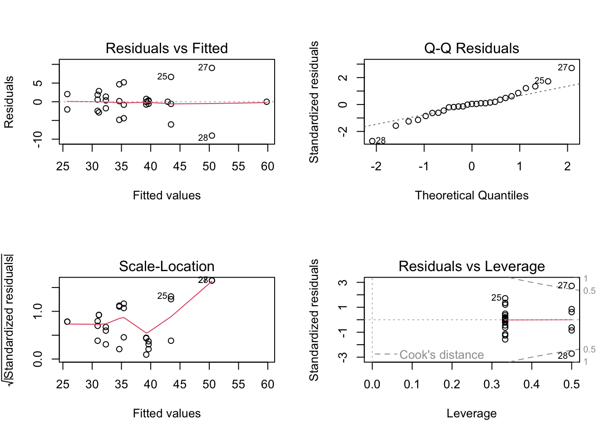
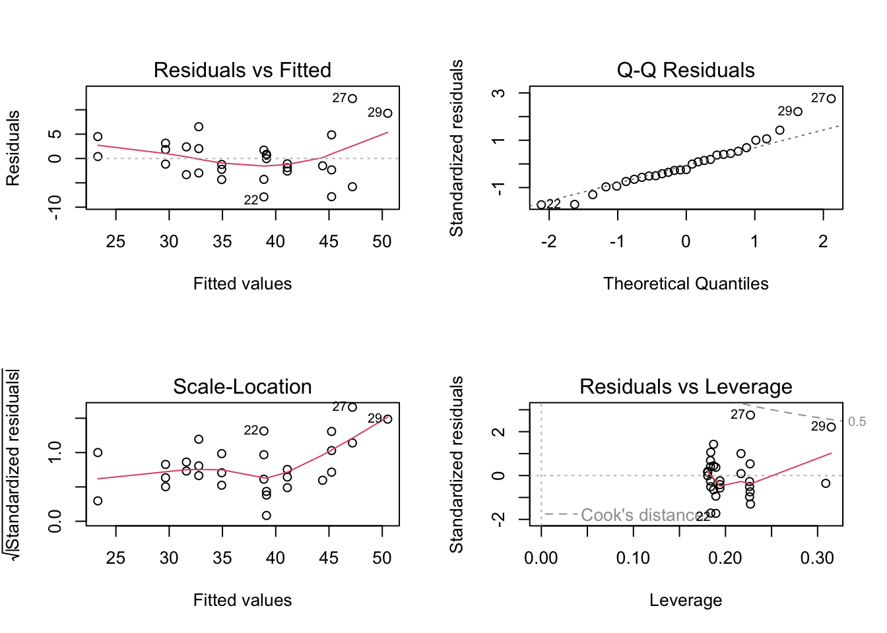
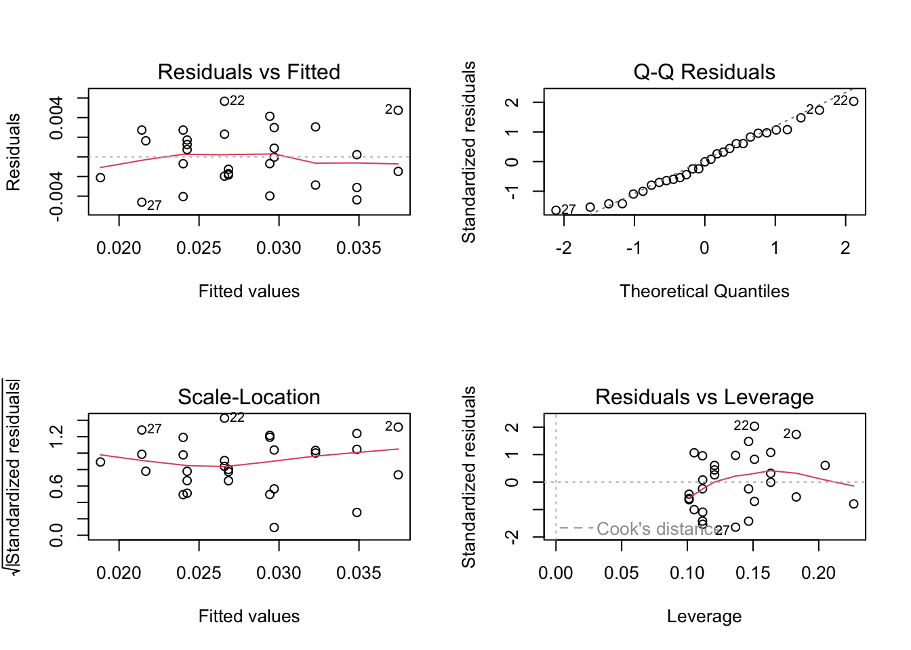
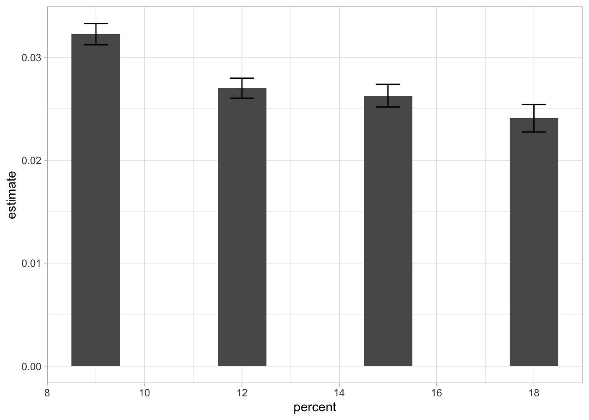
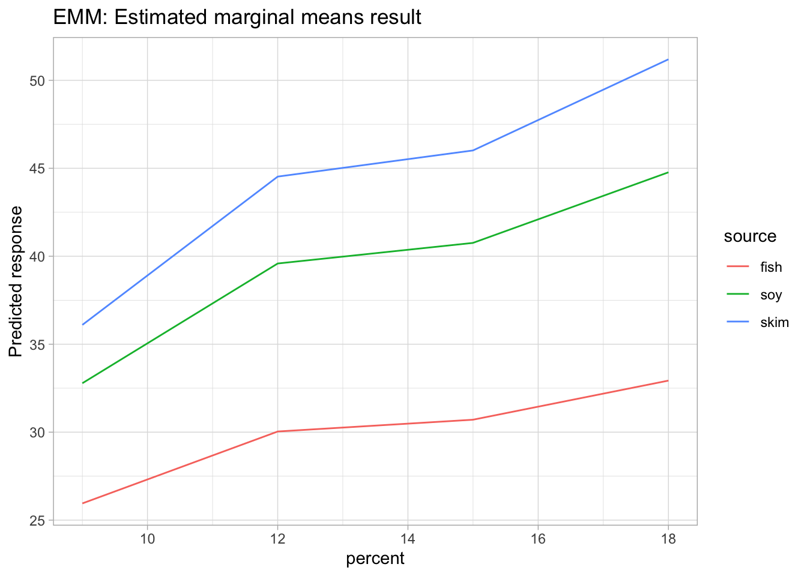
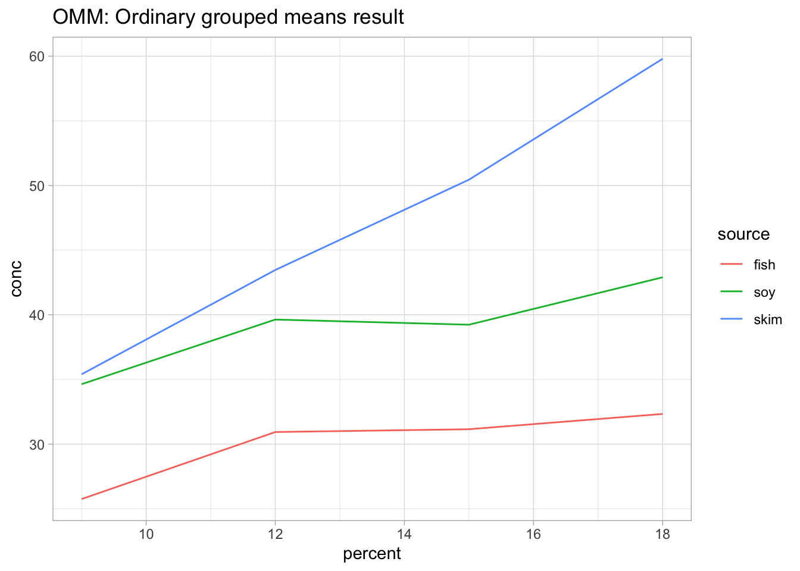
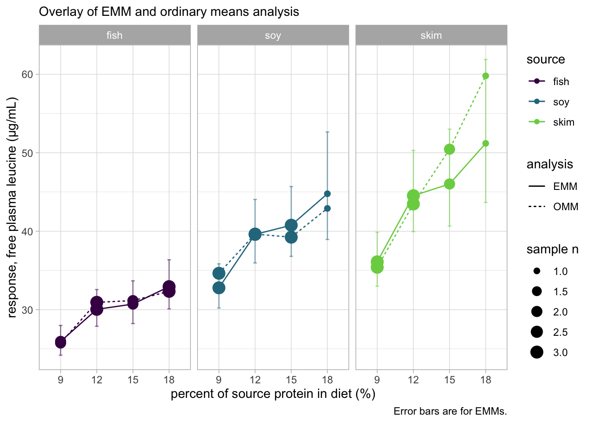

library(tidyverse) # dplyr, ggplot2, etc.
theme_set(theme_light()) # set default themes for ggplot in this doc to add contrast
library(broom) # help tidy display and compare of model summary stats
library(emmeans) # ~~The estimated marginal means package~~
library(patchwork) # for combining plots
library(modelbased) # https://easystats.github.io/modelbased/articles/estimate_means.htmlIntroduction to marginal means
Estimated marginal means (EMMs, previously known as least-squares means in the context of traditional regression models) are derived by using a model to make predictions over a regular grid of predictor combinations (called a reference grid) (S. R. Searle and Milliken 1980). Estimated marginal means have historically been used commonly in agricultural science publications. Russ Lenth authored the emmeans package (distributed on CRAN) to be an implementation of the “least-squares” means (which Lenth prefers to call “marginal means” for the reasons discussed below) in R.
As Searle, et al. write, there is a marginal mean for every variable (and every level of factor variables) in a data set, and a sufficiently defined model (be it a linear model (lm), glm, lmer, or glmer etc.) will allow for those marginal means to be estimated.
Ceteris paribus
But I just used “marginal” in the definition of “estimated marginal means.” So what does marginal signify? To distill it down, a marginal mean is the effect size that a particular variable contributes, all else being equal. (The all else being equal part comes from accounting for all other significant effects in the model.)
There are many advantages to using estimated marginal means to arrive at effect sizes (as well as confidence intervals) for a multi-factor / multi-level experiment.
- One challenge where EMMs provide real advantage is when the number of subjects / samples per condition are not all the same or close to the same; this situation is called an “unbalanced experiment,” and it occurs often during large Designs of Experiment (DoEs), either intentionally by design, or unintentionally due to experimental sample drop outs. EMMs can provide accurate estimates of means and standard errors (confidence intervals) for conditions that differ in sample size, such that, all else equal, conditions with a smaller n have wider confidence intervals.
- Another advantage is when there is a hypothesized (or evident) interaction effect in either the mean or the spread of one or more conditions in the experiment. EMMs can estimate accurate relative effects and standard errors (confidence intervals) for each of those interactions.
Note on using EMMs for experiments
EMMs are best used on data obtained from controlled experiments.
EMMs are less applicable to observational data.
A ceteris paribus (all else being equal) assumption is often critical to drawing scientific conclusions, because scientists seek to infer cause by ruling out all other possible influences. The “else” in “all else equal” distills both:
- the scientific idea of a controlled experiment, wherein variables being tested are altered precisely and systematically, and variables not being tested are held constant for all samples in the experiment;
- and the statistical idea of marginal, which is the relative change from an arbitrary starting point. Marginal statistics show what change or influence can be expected if we know one variable is changing—but know no other information about the condition.
Thus, a marginal effect, or a marginal mean, is a causal statement that says, on the margin (all else being equal), if a variable changes in this way, the average response due to that one change is this much (Hernán and Robins 2010).
The pigs dataset
Consider the pigs dataset provided with the package (help("pigs") provides details). These data come from an experiment where pigs are given different percentages of protein (percent) from different sources (source) in their diet, and later the concentration (conc) of free plasma leucine, in mcg/mL, was measured. (Observations 7, 22, 23, 31, 33, and 35 have been omitted, creating a more notable imbalance. (Oehlert 2010)) The percent values are quantitative, but the experimenter chose those particular values deliberately (like a DoE), and (at least initially) the experimenter wants separate estimates at each percent level; that is, in this case, percent is a factor, not a quantitative predictor.
Initial model fitting
Our first task is to come up with a good model. Making sure the model is appropriate for the data, experiment, and underlying scientific processes is critical to drawing valid conclusions with emmeans. Constructing good models is equal parts art and science, but I won’t labor too much over the details; any reader is encouraged to seek more in-depth guidance on model construction and evaluation. I will construct and view some models and settle on one of them. The key model diagnostics I will keep an eye on are:
- AIC
- BIC
- r-squared
- Residuals vs Fitted (appropriate model)
- Scale-Location (homoscedasticity)
- Residuals vs Leverage (outliers / overly-influential points)
mod1 <- lm(conc ~ source * factor(percent), data = pigs)
par(mfrow = c(2,2)); plot(mod1)
mod2 <- update(mod1, . ~ source + factor(percent)) # no interaction
par(mfrow = c(2,2)); plot(mod2)
map_dfr(list(mod1, mod2), glance, .id = "model")| model | r.squared | adj.r.squared | sigma | statistic | p.value | df | logLik | AIC | BIC | deviance | df.residual | nobs |
|---|---|---|---|---|---|---|---|---|---|---|---|---|
| 1 | 0.8083816 | 0.6843933 | 4.716024 | 6.519819 | 0.0003417 | 11 | -78.38304 | 182.7661 | 200.5409 | 378.0950 | 17 | 29 |
| 2 | 0.6996728 | 0.6343843 | 5.075926 | 10.716628 | 0.0000207 | 5 | -84.89886 | 183.7977 | 193.3688 | 592.5957 | 23 | 29 |
These models have R2 values of 0.808 and 0.700, and adjusted R2 values of 0.684 and 0.634. mod1 is preferable to mod2, suggesting the interaction term is needed. However, a residual-vs-predicted plot of mod2 has a classic “horn” shape (curving and fanning out), indicating a situation where a response transformation might help better than including the interaction.
After trial and error, it turns out that an inverse (reciprocal) transformation, (1/conc) serves really well. (Perhaps this isn’t too surprising, as concentrations are often determined by titration, in which the actual measurements are volumes of some counter-reactant; and these are reciprocally related to concentrations, i.e., amounts per unit volume.) In a real experiment, I would read the experimental protocol to verify this idea, or speak with the scientist conducting the experiment.
So here are three more models:
mod3 <- update(mod1, inverse(conc) ~ .)
mod4 <- update(mod2, inverse(conc) ~ .) # no interaction
mod5 <- update(mod4, . ~ source + percent) # continuous (non-factor) term for percent
par(mfrow = c(2,2)); plot(mod5)
map_dfr(list(mod1, mod2, mod3, mod4, mod5), glance, .id = "model")| model | r.squared | adj.r.squared | sigma | statistic | p.value | df | logLik | AIC | BIC | deviance | df.residual | nobs |
|---|---|---|---|---|---|---|---|---|---|---|---|---|
| 1 | 0.8083816 | 0.6843933 | 4.7160240 | 6.519819 | 0.0003417 | 11 | -78.38304 | 182.7661 | 200.5409 | 378.0950000 | 17 | 29 |
| 2 | 0.6996728 | 0.6343843 | 5.0759265 | 10.716628 | 0.0000207 | 5 | -84.89886 | 183.7977 | 193.3688 | 592.5956760 | 23 | 29 |
| 3 | 0.8175928 | 0.6995647 | 0.0031259 | 6.927099 | 0.0002349 | 11 | 133.86797 | -241.7359 | -223.9611 | 0.0001661 | 17 | 29 |
| 4 | 0.7866455 | 0.7402641 | 0.0029065 | 16.960361 | 0.0000005 | 5 | 131.59563 | -249.1912 | -239.6202 | 0.0001943 | 23 | 29 |
| 5 | 0.7487292 | 0.7185767 | 0.0030254 | 24.831412 | 0.0000001 | 3 | 129.22377 | -248.4475 | -241.6111 | 0.0002288 | 25 | 29 |
Tip
I could have used 1/conc as the response variable, but emmeans provides an equivalent inverse() function that will prove more advantageous later.
The residual plots for these models look a lot more like a random scatter of points (and that is good). The R^2 values for these models are 0.818, 0.787, and 0.749, respectively; and the adjusted R^2s are 0.700, 0.740, and 0.719. mod4 has the best adjusted R^2 and will be our choice.
Estimated marginal means
(EMM.source <- emmeans(mod4, specs = "source")) source emmean SE df lower.CL upper.CL
fish 0.0337 0.000926 23 0.0318 0.0356
soy 0.0257 0.000945 23 0.0237 0.0276
skim 0.0229 0.000994 23 0.0208 0.0249
Results are averaged over the levels of: percent
Results are given on the inverse (not the response) scale.
Confidence level used: 0.95 (EMM.percent <- emmeans(mod4, specs = "percent")) percent emmean SE df lower.CL upper.CL
9 0.0322 0.001032 23 0.0301 0.0344
12 0.0270 0.000969 23 0.0250 0.0290
15 0.0263 0.001104 23 0.0240 0.0286
18 0.0241 0.001337 23 0.0213 0.0268
Results are averaged over the levels of: source
Results are given on the inverse (not the response) scale.
Confidence level used: 0.95 Calling tidy() (from broom) on the object will put it into a beautiful data frame. And data frames can be plotted.
The input type can be set to “response”, indicating that values should be back-transformed. Note that the back-transformation is done as the last step, so all tests are conducted on the transformed scale.
The package emmeans supports confint (confidence intervals) and test (hypothesis testing) using a function parameter called type. The parameter type only has an effect if there is a known transformation or link function. The parameter value "response" specifies that the inverse transformation be applied, and in that case, the reported values (estimates, standard errors, confidence intervals) will be on the original response scale; otherwise, the output is on the non-linear predictor scale, as defined in the formula for the regression.
tidy(confint(EMM.percent, type = "response"))| percent | response | std.error | df | conf.low | conf.high |
|---|---|---|---|---|---|
| 9 | 31.01002 | 0.9926247 | 23 | 29.08415 | 33.20903 |
| 12 | 37.03236 | 1.3286375 | 23 | 34.47376 | 40.00120 |
| 15 | 38.05676 | 1.5989204 | 23 | 35.01363 | 41.67922 |
| 18 | 41.53107 | 2.3061140 | 23 | 37.25203 | 46.92072 |
tidy(confint(EMM.percent, type = "response")) %>%
ggplot(aes(y = response, x = percent)) +
geom_col(width = 1) +
geom_errorbar(width = 0.5,
aes(ymin = conf.low,
ymax = conf.high)) +
labs(title = "Marginal effect with confidence intervals",
y = "response, free plasma leucine (µg/mL)",
x = "percent of source protein in diet (%)")
emmeans::test(EMM.percent, type = "response")| percent | response | SE | df | null | t.ratio | p.value |
|---|---|---|---|---|---|---|
| 9 | 31.01002 | 0.9926247 | 23 | Inf | 31.24043 | 0 |
| 12 | 37.03236 | 1.3286375 | 23 | Inf | 27.87243 | 0 |
| 15 | 38.05676 | 1.5989204 | 23 | Inf | 23.80154 | 0 |
| 18 | 41.53107 | 2.3061140 | 23 | Inf | 18.00911 | 0 |
Comparison to ordinary means
Let’s compare these with the ordinary marginal means (OMMs) on inverse(conc):
with(pigs, tapply(inverse(conc), source, mean)) fish soy skim
0.03331687 0.02632333 0.02372024 The above code is in the style of base R (Dray 2024). Can I write the above ordinary means in Tidyverse/dplyr language?
pigs %>%
mutate(conc = inverse(conc)) %>%
summarize(mean = mean(conc),
"n" = n(),
.by = source)| source | mean | n |
|---|---|---|
| fish | 0.0333169 | 10 |
| soy | 0.0263233 | 10 |
| skim | 0.0237202 | 9 |
with(pigs, tapply(inverse(conc), percent, mean)) 9 12 15 18
0.03146170 0.02700341 0.02602757 0.02659336 pigs %>%
mutate(conc = inverse(conc)) %>%
summarize(mean = mean(conc),
"n" = n(),
.by = percent)| percent | mean | n |
|---|---|---|
| 9 | 0.0314617 | 8 |
| 12 | 0.0270034 | 9 |
| 15 | 0.0260276 | 7 |
| 18 | 0.0265934 | 5 |
Both sets of OMMs are vaguely similar to the corresponding EMMs. However, please note that the EMMs for percent form a decreasing sequence, while the the OMMs decrease but then increase at the end.
The reference grid, and definition of EMMs
Estimated marginal means are defined as marginal means of model predictions over the grid comprising all factor combinations—called the reference grid. For the example at hand, the reference grid is
emmeans::ref_grid(mod4)'emmGrid' object with variables:
source = fish, soy, skim
percent = 9, 12, 15, 18
Transformation: "inverse" (RG <- expand.grid(source = levels(pigs$source), percent = as_factor(unique(pigs$percent))))| source | percent |
|---|---|
| fish | 9 |
| soy | 9 |
| skim | 9 |
| fish | 12 |
| soy | 12 |
| skim | 12 |
| fish | 15 |
| soy | 15 |
| skim | 15 |
| fish | 18 |
| soy | 18 |
| skim | 18 |
To get the EMMs, I first need to obtain predictions on this grid:
(preds <- matrix(predict(mod4, newdata = RG), nrow = 3)) [,1] [,2] [,3] [,4]
[1,] 0.03853514 0.03329091 0.03256404 0.03036586
[2,] 0.03050486 0.02526063 0.02453376 0.02233558
[3,] 0.02770292 0.02245869 0.02173182 0.01953364then obtain the marginal means of these predictions:
apply(preds, 1, mean) # row means for source[1] 0.03368899 0.02565870 0.02285677For further reading on the family of R’s apply functions, see Guru99’s great summary.
apply(preds, 2, mean) # column means for percent[1] 0.03224764 0.02700341 0.02627654 0.02407836These marginal averages match the EMMs obtained earlier via emmeans().
Now let’s go back to the comparison with the ordinary marginal means. The source levels are represented by the columns of pred; and note that each row of pred is a decreasing set of values. So it is no wonder that the marginal means—the EMMs for source—are decreasing. That the OMMs for percent do not behave this way is due to the imbalance in sample sizes:
with(pigs, table(source, percent)); percent
source 9 12 15 18
fish 2 3 2 3
soy 3 3 3 1
skim 3 3 2 1nrow(pigs) / nrow(RG)[1] 2.416667table uses factors to build a contingency table of the counts at each combination of factor levels.
The mean number of samples per condition is 2.42, so any source * percent condition with greater than 2.42 has greater than average weighting in the OMM, whereas those with below 2.42 observations has below the average weighting.
The alarming observation that two conditions have only one observation (soy @ 18% and skim @ 18%) show that those effects, while they may be reported as “means,” are really just one observation, a situation which is more susceptible to bias.
emmeans::emmip(mod4, source ~ percent, type = "response") +
labs(title = "EMM: Estimated marginal means result");
ggplot(summarize(pigs, "conc" = mean(conc), .by = c("percent", "source")),
aes(y = conc, x = percent, color = source)) +
geom_line() +
labs(title = "OMM: Ordinary grouped means result")
pigs_sample_n <- pigs %>%
mutate("percent" = as_factor(percent)) %>%
count(percent, source)
combined_omm_emm_data <- pigs %>%
mutate("percent" = as_factor(percent)) %>%
summarize("conc" = mean(conc), .by = c("percent", "source")) %>%
bind_rows(
bind_cols(RG,
inverse(predict(mod4, newdata = RG, interval = "confidence", level = 0.95)) %>%
as_tibble() %>%
dplyr::rename("conc" = fit)
),
.id = "analysis") %>%
mutate("analysis" = case_when(analysis == 1 ~ "OMM",
analysis == 2 ~ "EMM")) %>%
left_join(pigs_sample_n, by = c("percent", "source"))As seen in the above code, I can also use the predict() function to calculate confidence intervals for the marginal means. To do this, I need to specify the interva argument, which can take two values: "confidence" and "prediction" (Steven P. Sanderson II 2023).
A confidence interval is the range of values within which we are confident that the true mean of the population will fall. A prediction interval is the range of values within which we are confident that the true value of a new observation will fall. Thus, for comparing the EMM to the OMM, a confidence interval is appropriate because we are comparing means, not individual observations.
combined_omm_emm_plot <- combined_omm_emm_data %>%
ggplot(aes(y = conc, x = percent, color = source, linetype = analysis,
#
)) +
geom_line(aes(group = interaction(source, analysis))) +
geom_point(aes(size = n)) +
geom_errorbar(aes(ymin = upr, ymax = lwr),
width = 0.1, alpha = 0.5) +
scale_color_viridis_d(option = "D", end = 0.8) +
scale_size_continuous(range = c(2,4.5)) +
facet_wrap(~ source) +
labs(subtitle = "Overlay of EMM and ordinary means analysis",
y = "response, free plasma leucine (µg/mL)",
x = "percent of source protein in diet (%)",
size = "sample n",
caption = "Error bars are for EMMs.")
combined_omm_emm_plot
Overlaying the data using some custom code to tidy up the combining of both EMM and OMM data into one plottable frame shows how the ordinary marginal (i.e. grouped) means deviate from the Estimated Marginal Means when there are fewer individual observations (n = 1 for soy @ 18% and n = 1 for skim @ 18%, which happens to deviate the farthest). Those low-n observations are displayed as smaller dots, whereas the other conditions have 2 or 3, which get plotted as larger dots.
Note that where the ordinary marginal means diverge away from the estimated marginal means, the EMM confidence interval is also wide, ultimately leading to the ordinary mean being within the confidence interval. This observation shows that the model (and its predictions) are consistent with the data. These confidence intervals are not calculated when doing ordinary means analysis.
combined_omm_emm_data %>%
pivot_wider(id_cols = c("source", "percent", "n"),
names_from = "analysis",
values_from = c("conc", "lwr", "upr")) %>%
select(where(~ sum(!is.na(.x)) >= 1)) %>%
mutate("EMM_CI_width" = lwr_EMM - upr_EMM,
"EMM_pct_uncertainty" = round(EMM_CI_width / conc_EMM * 100, 1),
"OMM_EMM_pct_diff" = round((conc_OMM - conc_EMM) / conc_EMM * 100, 1)) %>%
relocate(EMM_pct_uncertainty, OMM_EMM_pct_diff, .after = conc_EMM)| source | percent | n | conc_OMM | conc_EMM | EMM_pct_uncertainty | OMM_EMM_pct_diff | lwr_EMM | upr_EMM | EMM_CI_width |
|---|---|---|---|---|---|---|---|---|---|
| fish | 9 | 2 | 25.75000 | 25.95034 | 14.6 | -0.8 | 27.98352 | 24.19259 | 3.790934 |
| fish | 12 | 3 | 30.93333 | 30.03823 | 15.6 | 3.0 | 32.55836 | 27.88020 | 4.678168 |
| fish | 15 | 2 | 31.15000 | 30.70872 | 17.7 | 1.4 | 33.66886 | 28.22702 | 5.441832 |
| fish | 18 | 3 | 32.33333 | 32.93172 | 19.0 | -1.8 | 36.35469 | 30.09786 | 6.256834 |
| soy | 9 | 3 | 34.63333 | 32.78166 | 17.2 | 5.6 | 35.83639 | 30.20681 | 5.629573 |
| soy | 12 | 3 | 39.63333 | 39.58730 | 20.4 | 0.1 | 44.04318 | 35.95019 | 8.092997 |
| soy | 15 | 3 | 39.23333 | 40.76017 | 21.8 | -3.7 | 45.69176 | 36.78942 | 8.902343 |
| soy | 18 | 1 | 42.90000 | 44.77162 | 30.6 | -4.2 | 52.64817 | 38.94515 | 13.703024 |
| skim | 9 | 3 | 35.40000 | 36.09727 | 19.1 | -1.9 | 39.86363 | 32.98118 | 6.882447 |
| skim | 12 | 3 | 43.46667 | 44.52619 | 23.3 | -2.4 | 50.30224 | 39.94000 | 10.362244 |
| skim | 15 | 2 | 50.45000 | 46.01547 | 26.8 | 9.6 | 53.00407 | 40.65509 | 12.348975 |
| skim | 18 | 1 | 59.80000 | 51.19373 | 35.6 | 16.8 | 61.88076 | 43.65446 | 18.226302 |
The EMMs vs OMMs tend to differ more for smaller sample sizes (n). The confidence intervals also tend to be wider for the lm predictions on the lower sample size conditions in the experiment, and these tend to correlate with the difference between the OMM (ordinary marginal mean) and the EMM (estimated marginal mean), as the table above shows.
EMMs worked well for us. The application of a linear model (and a linearizing transformation of the response scale) allows for the balanced reference grid to get balanced estimated means for each effect. This process produced more balanced estimated means than the ordinary means taken from the grouped-by factor levels.
Given the good fit of the model, I would trust these EMMs more than the ordinary grouped-by means. Plus, the linear model gives us confidence intervals for each estimated marginal effect, to which statistical analysis can be applied.
Conclusions
In summary, I obtained a reference grid of all factor combinations, obtained model predictions on that grid, and then I estimated the expected marginal means as equally-weighted marginal averages of those predictions. Those EMMs are not subject to confounding by other factors or biased sampling, such as might happen with ordinary marginal means of the data. Moreover, unlike OMMs, EMMs are based on a model that is well-fitted to the data.
References
Dray, Matt. 2024. “The Aesthetics Wiki: An r Addendum.” rostrum.blog. https://www.rostrum.blog/posts/2024-05-08-aesthetic/.
Hernán, Miguel A, and James M Robins. 2010. "Causal Inference: What If". Boca Raton: Chapman & Hall/CRC.
Oehlert, Gary W. 2010. A First Course in Design and Analysis of Experiments.
S. R. Searle, F. M. Speed, and G. A. Milliken. 1980. “Population Marginal Means in the Linear Model: An Alternative to Least Squares Means.” The American Statistician 34 (4): 216–21. https://doi.org/10.1080/00031305.1980.10483031.
Steven P. Sanderson II, MPH. 2023. “Unlocking the Power of Prediction Intervals in r: A Practical Guide.” Steve’s Data Tips; Tricks. https://www.spsanderson.com/steveondata/posts/2023-11-13/index.html.